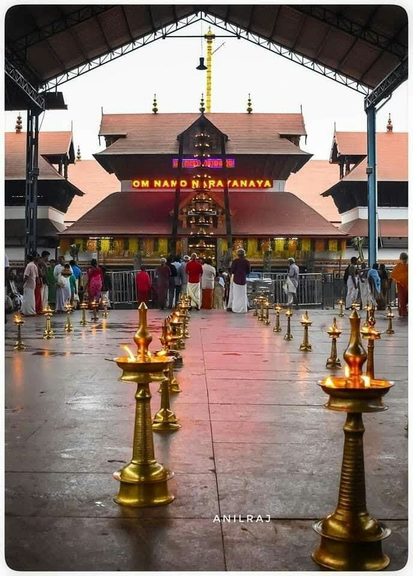
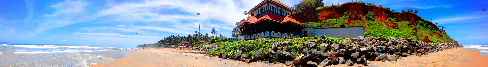
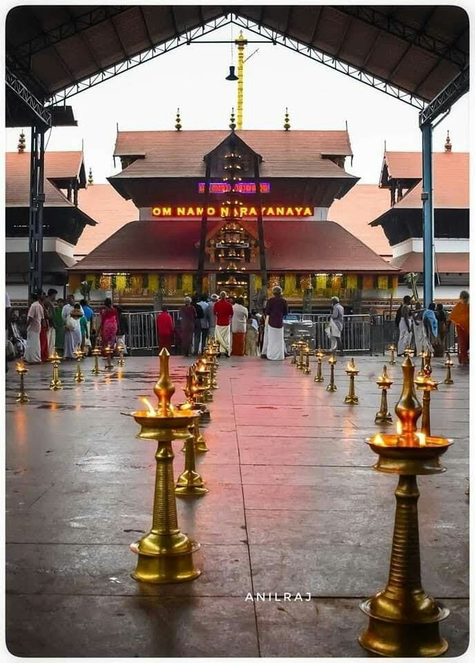
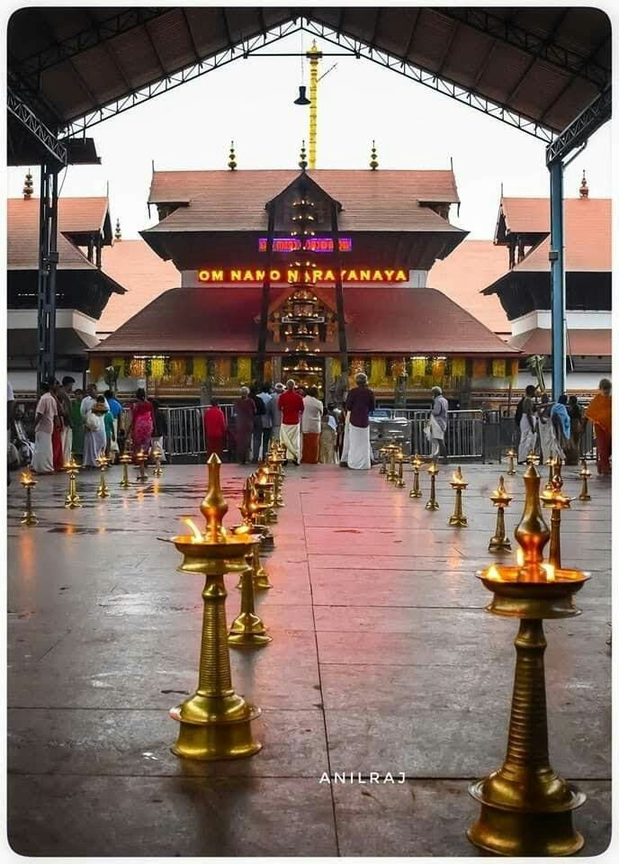

Kerala, a state on India's tropical Malabar Coast, has nearly 600km of Arabian Sea shoreline. It's known for its palm-lined beaches and backwaters, a network of canals. Inland are the Western Ghats, mountains whose slopes support tea, coffee and spice plantations as well as wildlife. National parks like Eravikulam and Periyar, plus Wayanad and other sanctuaries, are home to elephants, langur monkeys and tigers. Kerala called Keralam in Malayalam,is a state on the Malabar Coast of India.It was formed on 1 November 1956, following the passage of the States Reorganisation Act, by combining Malayalam-speaking regions of the erstwhile regions of Cochin, Malabar, South Canara, and Travancore.Spread over 38,863 km2 (15,005 sq mi), Kerala is the 21st largest Indian state by area. It is bordered by Karnataka to the north and northeast, Tamil Nadu to the east and south, and the Lakshadweep Sea to the west. With 33 million inhabitants as per the 2011 census, Kerala is the 13th-largest Indian state by population. It is divided into 14 districts with the capital being Thiruvananthapuram. Malayalam is the most widely spoken language and is also the official language of the state.
10 Most Beautifull Places in Kerala
S.NO
Places
1
Allappey
2
Munnar
3
Kochi
4
Wayanad
5
Varkala
6
Kozhikode
7
Thrissur
8
palakkad
9
Thekkady
10
Kumarakam
What is beautiful About Kerala ?
Kerala is also known for its beautiful hill stations. Some popular hill stations to visit include Munnar, Wayanad, and Thekkady. Take a walk through the tea plantations, enjoy the cool mountain air, and take in the beautiful views of the surrounding landscape. Kerala is also known for its beautiful temples and palaces. Named as one of the ten paradises of the world by National Geographic Traveler, Kerala is one of the prominent tourist destinations of India, with coconut-lined sandy beaches, backwaters, hill stations, Ayurvedic tourism and tropical greenery as its major attractions.Agriculture contributes most to the state’s income in the primary sector. Kerala’s major sources of exports are agro-based like coir and cashew as well as marine products and manpower. In spices, pepper is the single most important product, with Kerala being the largest producer and exporter of black pepper. Cardamom and ginger are also exported. According to a legend the state of Kerala came up from beneath the sea, when the warrior sage Parashurama threw his axe here. The scriptures say that, Parashurama appealed to the gods to atone him from his previous sins, and he received two boons, from Varuna, the God of the Oceans and Bhumidevi, the Goddess of earth. He proceeded to Kanyakumari, and threw his axe northwards, and the land that rose from the sea where the axe fell was called the land of Parashurama. Another theory suggests that the enormous amount of silt that the rivers of Kerala deposit from the hills to the sea is washed up to the shore.

Many of the temples in Kerala hold festivals on specific days of the year.A common characteristic of these festivals is the hoisting of a holy flag which is brought down on the final day of the festival after immersing the deity.Some festivals include Poorams, the best known of these being the Thrissur Pooram
Elephants, firework displays and huge crowds" are the major attractions of Thrissur Pooram, Other known festivals are Makaravilakku,Chinakkathoor Pooram, Attukal Pongala and Nenmara Vallangi Vela Other than these, festivals locally known as utsavams are conducted by many temples mostly on annual basis. Temples that can afford it will usually involve at least one richly caparisoned elephant as part of the festivities
Onam is a harvest festival celebrated by the people of Kerala and is reminiscent of the state's agrarian past.It is a local festival of Kerala consisting of a four-day public holidays; from Onam Eve (Uthradam) to the fourth Onam Day.Onam falls in the Malayalam month of Chingam (August–September) and marks the commemoration of the homecoming of King Mahabali.The total duration of Onam is 10 days and it is celebrated all across Kerala. It is one of the festivals celebrated with cultural elements such as Vallam Kali,Pulikali,Pookkalam,Thumbi Thullal and Onavillu
Kerala is home to a number of performance arts. These include five classical dance forms: Kathakali, Mohiniyattam, Koodiyattom, Thullal and Krishnanattam, which originated and developed in the temple theatres during the classical period under the patronage of royal houses.Kerala natanam, Thirayattam,Kaliyattam, Theyyam, Koothu and Padayani are other dance forms associated with the temple culture of the region.Some traditional dance forms such as Oppana and Duffmuttu were popular among the Muslims of the state,while Margamkali and Parichamuttukali are popular among the Syrian Christians and Chavittu nadakom is popular among the Latin Christians.
Tourism
Kerala's culture and traditions, coupled with its varied demographics, have made the state one of the most popular tourist destinations in India. In 2012, National Geographic's Traveller magazine named Kerala as one of the "ten paradises of the world"and "50 must see destinations of a lifetime".Travel and Leisure also described Kerala as "One of the 100 great trips for the 21st century".
In 2012, it overtook the Taj Mahal to be the number one travel destination in Google's search trends for India.CNN Travel listed Kerala among its '19 best places to visit in 2019'.Kerala was named by TIME magazine in 2022 among the 50 extraordinary destinations to explore in its list of the World's Greatest Places
Kerala's beaches, backwaters, lakes, mountain ranges, waterfalls, ancient ports, palaces, religious institutions and wildlife sanctuaries are major attractions for both domestic and international tourists.The city of Kochi ranks first in the total number of international and domestic tourists in Kerala
Kerala tourism is a global brand and regarded as one of the destinations with highest recall.In 2006, Kerala attracted 8.5 million tourists, an increase of 23.7% over the previous year, making the state one of the fastest-growing popular destinations in the world.In 2011, tourist inflow to Kerala crossed the 10-million mark.

A panoramic view of Varkala Beach Cliff
Its beach is famous for its natural springs which are said to have medicinal qualities. The 2000-year-old Janardhanaswamy Temple along with the Sivagiri Mutt attract a steady stream of visitors all year long. Many Ayurveda centres have been set up in the area as well which only adds to its appeal.
The Papanasam Beach (also called as Varkala Beach), which is ten kilometers away from Varkala, is renowned for a natural spring. Which is considered to have medicinal and curative properties. A dip in the holy waters at this beach is believed to purge the body of impurities and the soul of all sins; hence the name 'Papanasam Beach'.
A two thousand-year-old shrine the Janardhanaswamy Temple stands on the cliffs overlooking the beach, a short distance away. The Sivagiri Mutt, founded by the great religious reformer and philosopher Sree Narayana Guru (1856 - 1928) is also close by. The Samadhi (the final resting place) of the Guru here attracts thousands of devotees every year during the Sivagiri Pilgrimage days - 30th December to 1st January. Sree Narayana Guru propagated the ideology: "one caste, one religion and one God", in a society torn by the taboos of caste system.


 
